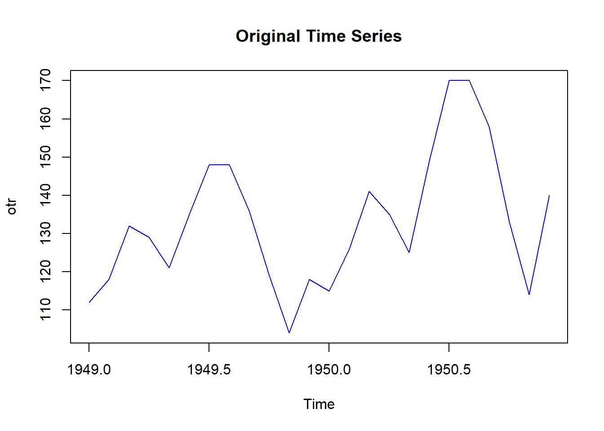
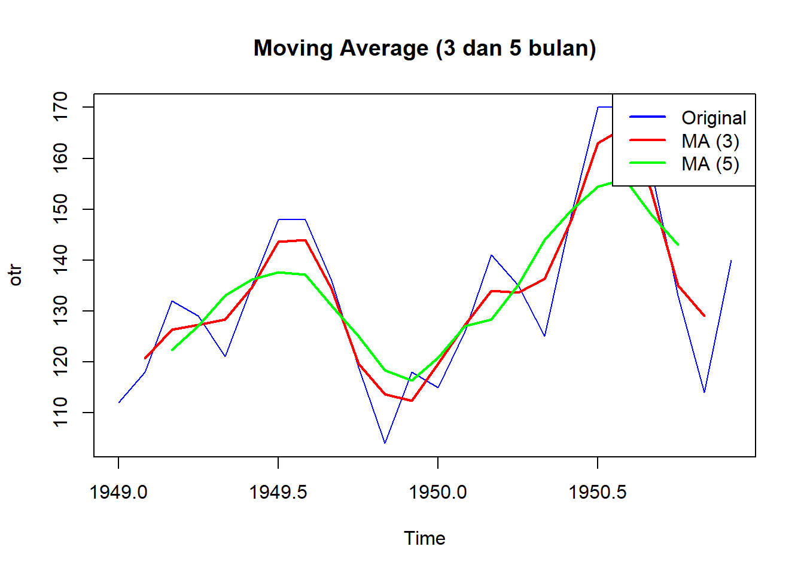

Bab 4 Moving Average
Dalam bentuk peramalan time series atau data berkala juga menggunakan beberapa hal. Sifat data time series adalah sifat yang tidak beraturan. Terkadang suatau data meningkat begitu pesat di saaat waktu tertentu namun di saat lain yang menurun. Kalau mengumpulkan data yang time series maka kita akan melihat suatu data yang sangat beraturan yang tidak terduga, Untuk menduga data yang tertinggi maka kita akan khawatir dengan data yang sedemikian tinggi tersebut akan tetapi kalau kita mebuat upaya untuk menghaluskan gerakan data tersebut maka kita akan melihat pergerakan data tidak begitu curam sekalau atau tinggi sekali. Bahkan anda melihat kalau perkembangan suatu data tersebut menjadi ebih mendatar. Dengan demikian kita bisa menebak kalau data tersebut bergerak ke atas atau ke bawah maka kita bisa memprediksi lebih mudah lagi. Sesuai namanya Moving average adalah rata-data bergerak. Suatu data dalam time series akan kita susun demikian sehingga kita akan perioleh dengan data yang lebih rata dengan itu. Untuk membuat suatu moving average kita bisa menghitung dengan manual mengenai Moving average tersebut. Umpama kita bisa menghaluskan data (Smooth) dengan moving average dalam periode empat tahun. Kita bisa menggunakan juga data dengan moving average sebesar 5 tahun . Kita dapat membandingkan kedua data yang telah mengalami smoothing. Keduanya begitu halus. Dengan ada moving average kita seolah melihat “hakikat” dari data time series tersebut. Ia melembutkan gerakan data dan kita dapat melihat yang mana situasi yang terjadi menurun atau dengan yang mana situasi penurunan, Karena kita mengambil rata-rata maka kita telah membagikan nilai yang sedemikian tidak merata terus. Ada suatu tambal sulam anatar kedua data karena membagi rata yang satu menutupi kekurangan yang lainnya. Selama perbedaan kurang menyolok maka pergerakan tidak akan berbeda namun juga sudah sangat berbeda maka akan terliaht dengan kentara kalau nilai itu akan berbeda.
Apakah moving average itu suatu bentuk peramalan ?
# Data time series contoh
datama <- c(112, 118, 132, 129, 121, 135, 148, 148, 136, 119, 104, 118,
115, 126, 141, 135, 125, 149, 170, 170, 158, 133, 114, 140)
# Membuat data time series
otr <- ts(datama, start = c(1949, 1), frequency = 12)
plot(otr, main = "Original Time Series", col = "blue")
Dari hasil grafik diatas maka kita bisa untuk melakukan perhitungan dengan moving average seperti dibawah ini:
# Moving average dengan jendela 3 bulan
ma_3 <- stats::filter(otr, filter = rep(1/3, 3), sides = 2)
# Moving average dengan jendela 5 bulan
ma_5 <- stats::filter(otr, filter = rep(1/5, 5), sides = 2)
# Plot hasil moving average
plot(otr, main = "Moving Average (3 dan 5 bulan)", col = "blue")
lines(ma_3, col = "red", lwd = 2) # 3 bulan
lines(ma_5, col = "green", lwd = 2) # 5 bulan
legend("topright", legend = c("Original", "MA (3)", "MA (5)"),
col = c("blue", "red", "green"), lty = 1, lwd = 2) Kita melakukan moving average dengan 3 periode dan dua periode hasilnya menunjukkan gerakan penghalusan smooth movement Dengan 3 periode lebih cepat dalam menagggapi perubahan namun tidak halus sifatnya sebaliknya 5 periode kurang. Bentuk Moving Average hanya melihat sifat dari trend dan musiman saja
Stationer
Kita menyadari kalau data time series ada dari sebuah sumber data. Data itu berasa dari bisa jadi satu individu, satu karakter, satu peristiwa dan lain-lain. Data time series adalah data yang tidak dibuat (tentu selama) tidak ada manipulasi dari pihak pembuat data tersebut. Katakanlah ada data tersebut akan ada maka kita auki saja itu sebagai data dibalik benar atau salahnya data tersebut.
Kebanyakan data time series itu adalah tidak stationer. Hal ini berkaitan dengan data yang sifatnya time series. Ada suatu pola yang berkaitan dengan aktu yang sudah dijelaskan sebelumnya. Tentunya maksuknya stataioner ini bukanlah data yang acak seperti halnya data dalam random walk tetapi kondisi ini berkaitan dengan kestaioneran itu sendiri. Stataioner adalah suatu kondisi data yang rata. Pada saat data bertumbuh atau meningkat sebaliknya data tersebut bisa menurun maka ia mempunyai perkembangan yang sulit untuk diramalkan . dengan sata stataiomner yang mempunyai sumbu dengan garis tegak maka akan mudah sekali melakukan peramalan
Untuk mendeteksi stationer kita menggunakan uji Augmented Dickey-Fueller yang ada dengan rumus seperti ini. Dari uji ini akan kita peroleh data tersebut apakah sudah sesuai
Umumny mengatasi data yang tidak stationer adalah differencing atau dengan mencari selsisih data sebelum dengan data sesudahnya
Pertanyaan apakah stationer berkaitan dengan autokorelasi. ∆yt = yt_-1-y_t . Dengan mencari selisih nilai ini maka menjadi data lebih stataioner Heumann and Shalabih (2016) Umunnya data akan menjadi stataioner setelah perlakukan ini data akan menjadi stationer dan siao untuk langkah selanjutnya sesuai dengan data. Kita harus perhatikan juga bahwa ternyata memang ada data-data yang non stationer. Dalam berapa literasi ini bisa menjadikan suatu hal yang daripada yang lain. Kalau memang data akan sulit distationerkan maka ini adalah alternatif yang lain. Pada beberapa kasus memang sulit untuk memperbaiki data yang sudah tidak bisa diatur lagi.
Tentu ada beberapa hal yang menjadi deteksi dari kestationera data tersebut kita bisa melakukan uji tersebut seperti halnya untuk menduga adanya kestationeradan dari data time series tersebut. Pengujian ini berlaku pada data yang mentah data yang sudah mengalami difernesiasi. Sebab dengan data differensiasi tidak menjamin kalau sudah selesai maka akan menjadi stationer.
Untuk mengetahui adanya stationer atau tidak dalam data maka kita harus melakukan uji kestationeran. Tampilan grafik yang mempunyai pola saja tidak cukup meyakinkan adanya pola dalam data tersebut. Untuk memastikan kita bisa melakukan
Uji Augmented Dickey-FuellerPengujian ini akan memnggunakan variabel seperti dalam persamaan ini (4.1)
\[\begin{equation} ∆Yt = α + βt + γt-1 +δ1∆yt-1+ … + δp-1∆yt-p+1 +εt \tag{4.1} \end{equation}\]
Dalam uji ADF hipotesis nol adalah terjadi data tidak stationer, sedangkan hipotesis alternatifnya dalah data stationer. Jika nilai probabilitas dari uji ADF menunjukkan lebih kecil dari 0,05 (P<0,05 maka hasilny adalah data stationer)
Uji Philip Peron Uji ini adalah salah sati alternatif dari Uji ADF. Uji ini adalah pengembangan dari Uji Dickey-Fueller pengembangan nilai dari ρ=1 menjadi ∆Yt = (ρ-1) yt-1+ +ut Lambang Delta atau ∆ adalah difference maksudnya dalah selisih antara data waktu tertentu (Xt)dengan waktu yang sebelumnya (Xt-1)
Apa arti kondisi tidak stationer? Apa implikasi data stationer.
https://jagostat.com/analisis-time-series/autoregressive-model